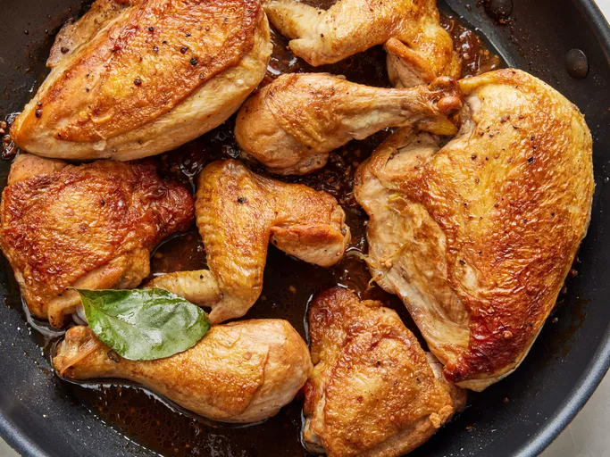

Chicken Adobo Recipe

Description
Chicken Adobo is a popular Filipino dish made with chicken cooked in a savory-sour sauce.
Ingredients
- 2 tablespoons vegetable oil
- 1 (3 pound) chicken, cut into pieces
- 1 large onion, quartered and sliced
- 2 tablespoons minced garlic
- ⅔ cup low sodium soy sauce
- ⅓ cup white vinegar
- 1 tablespoon garlic powder
- 2 teaspoons black pepper
- 1 bay leaf
Instructions
- Heat vegetable oil in a large skillet over medium-high heat. Cook chicken pieces in oil until golden brown, 2 to 3 minutes per side. Transfer chicken to a plate and set aside.
- Add onion and garlic to the skillet; cook until softened and brown, about 3 to 5 minutes.
- Pour in soy sauce and vinegar and season with garlic powder, black pepper, and bay leaf.
- Return chicken to pan, increase heat to high, and bring to a boil. Reduce heat to medium-low, cover, and simmer until chicken is tender and cooked through, 35 to 40 minutes.
Nutrition Facts
Estimated nutrition per serving of Chicken Adobo (recipe makes about 6 servings)
| Nutrient |
Amount per serving |
| Calories | 397 kcal |
|---|
| Total Fat | 27 g |
|---|
| Total Carbohydrates | 7 g |
|---|
| Dietary Fiber | 1 g |
|---|
| Protein | 30 g |
|---|
| Sodium | 1,130 mg |
|---|